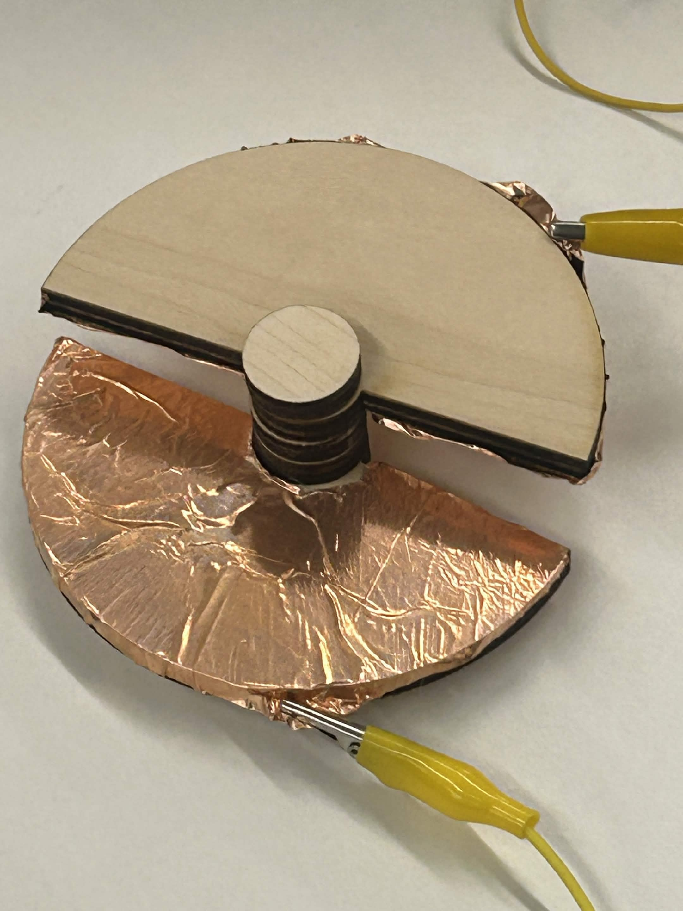
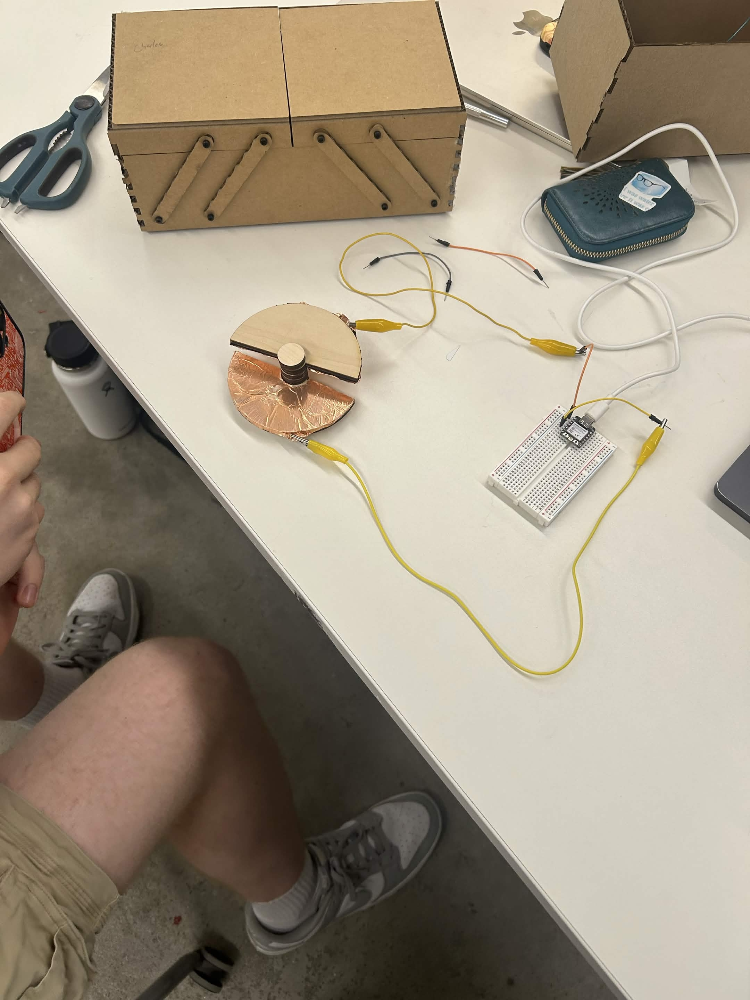
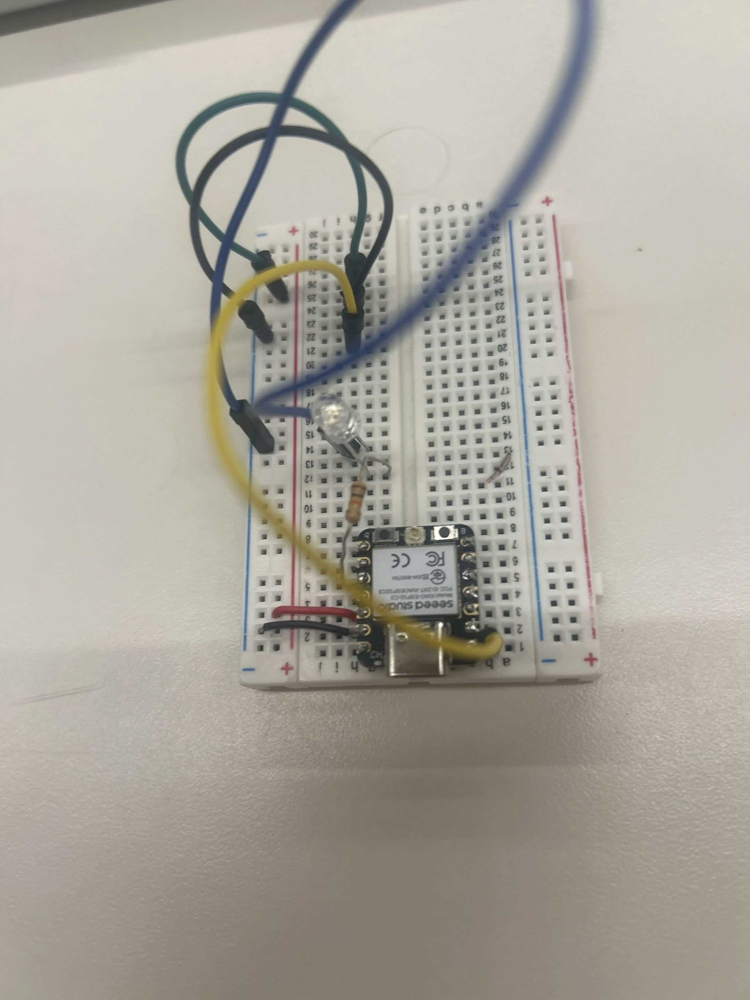
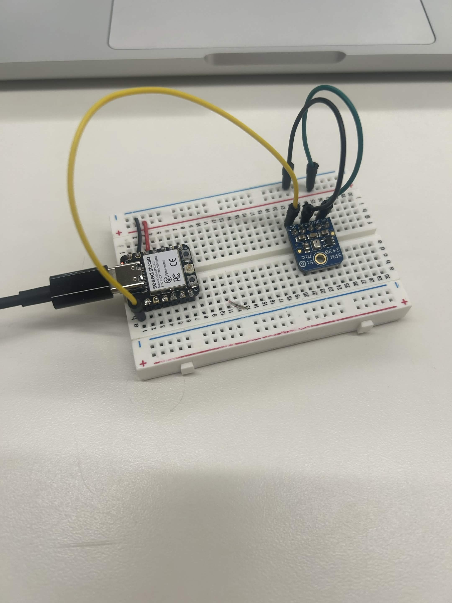

Week 6: Inputs
Capacitive Sensor
My capacitive sensor messures rotation. The capacitor is a parrallel plate capacitor made with two semi circles that have copper tape on the inside faces. They are connected by a shaft that allows them to rotate. The sensor works by messuring the capacitance of the capacitor as the faces rotate wich increases linearly because the capacitance is based off surface area wich increases linearly with rotation.


Another Sensor
My other sensor is a microphone that I used to turn on an LED based of the noise level read by the microphone.
.

Calabration